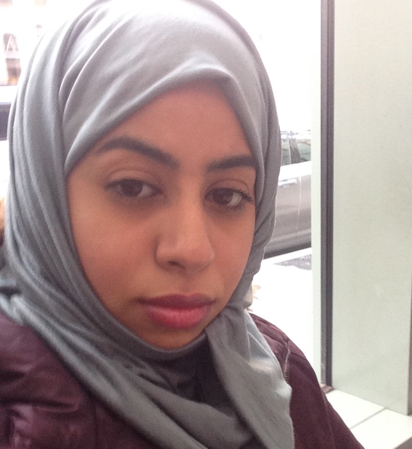

Uzzie Cannon
Project Coordinator and Content Developer-Design
ablueslenz@gmail.com
Uzzie is the project developer and coordinator. She will coordinate project workflow, oversee content development, and work closely with front-end and server-side development. Her experience is mostly with HTML, CSS, and TEI.

Pichleap Sok
Server-side Coordinator and Front-end Developer
asok.pichleap@gmail.com
Jessie will work primarily with front-end design, with strict attention to HTML, CSS and Scripting languages

israa.alghanmi@gmail.com
Israa Alghanmi
Front-end Developer
israa.alghanmi@gmail.com
Israa will work with back-end design for the Contact page. She will also work on the front-end design of the desktop framework as we migrate the old version to the new Bootstrap enabled one.